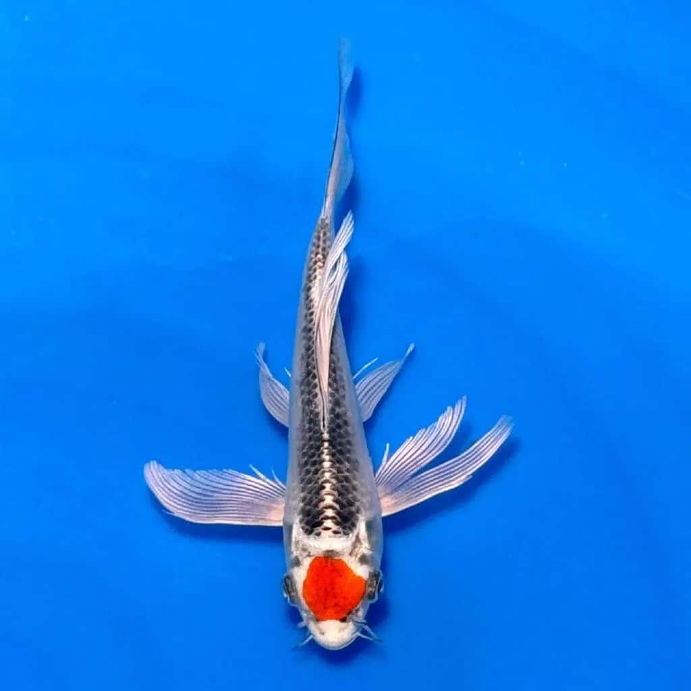
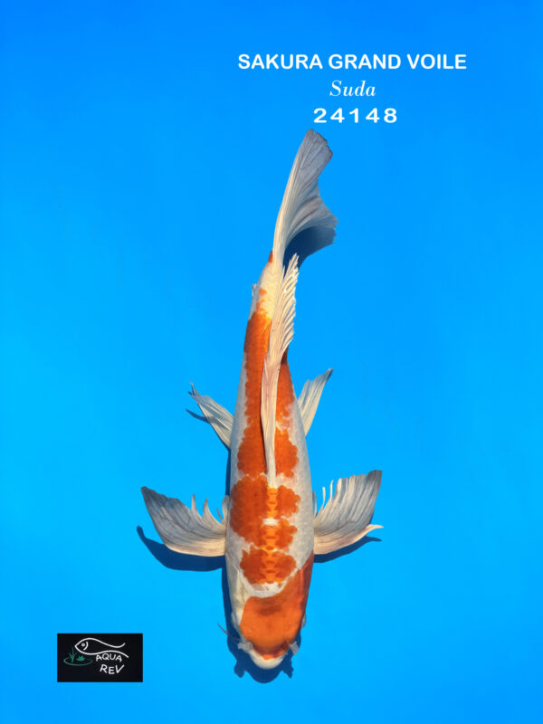

Notre histoire
Une passion qui a tout changé
Tout a commencé avec Manu, véritable passionné de koï. Puis, peu à peu, Mathilde s'est laissée emporter par cette belle aventure. Ce qui n'était au départ qu'un loisir est devenu, au fil du temps, un véritable projet de vie.
Nous continuons nos métiers respectifs, et nous nous lançons aujourd'hui dans cette belle aventure ensemble : vous proposer des carpes koï de qualité, du matériel, de la nourriture.

Nos bassins
Trois bassins construits avec expérience
Comme beaucoup, nous avons débuté avec un premier bassin chez nous… puis un deuxième, que nous avons entièrement refait après avoir appris, compris et perfectionné notre approche.
Et un troisième, plus petit bassin, a vu le jour : notre bac de quarantaine, dédié aux poissons en observation après leur arrivée chez nous une étape essentielle pour garantir leur santé et celle de nos pensionnaires.

Notre engagement
Vous accompagner avec authenticité et savoir-faire
Après avoir obtenu notre diplôme et acquis de l'expérience, nous avons décidé de partager cette passion avec vous à travers Koi's Story.
Que vous soyez débutant ou passionné confirmé, notre objectif est simple : vous accompagner avec authenticité, passion et savoir-faire. Merci d'être là et bienvenue dans notre univers.